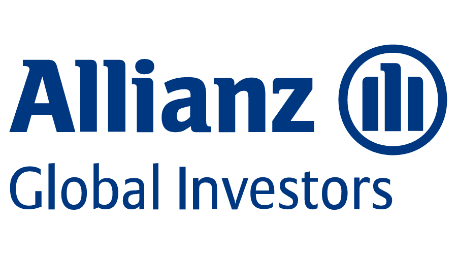
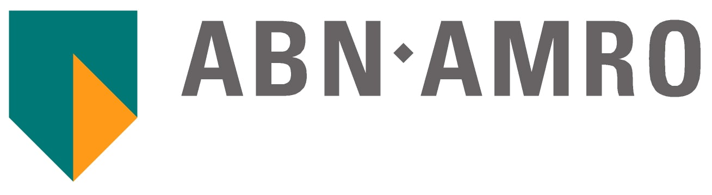

Vex Holdings Inc - Building the Public Market for Private Securities
Vex is building the regulatory and software pieces necessary to create a functioning market for private securities primarily created in the Venture Capital process.
Vex Securities LLC
Vex Securities is a FINRA regulated broker/dealer (brokercheck). Vex Securities has received approval from the SEC to operate an ATS which will be able to list and trade private securities and digital assets.
Vex Capital LLC
Vex Capital is a Private Fund Advisor which will package existing shares into tradeable vehicles for trading on the ATS.
Vex Registry LLC
Vex Registry is an SEC regulated Transfer Agent specifically designed to support the operations of the Vex Group.
Financial Technology, Blockchain and Cryptography
As commission rates, underwriting fees and fund management fees collapsed from percentage points to basis points, it became evident that there was very little room for the old school stockbroker, fund manager or deal maker. There are still some trading desks lingering on but every firm is looking to automate the investment process at every level.
The process of this automation is actually very exciting because it involves a complete system analysis, which includes the regulatory considerations. Often this suggests a re-engineering of the processes that have emerged from decades of "market practice."
Once the process is subjected to the logic of if-then statements, a number of old school practices no longer seem relevant. Often that recognition is where the opportunity lies. Unfortunately for many good ideas, fixes and hacks, the legacy players are not keen to have their comfortable niches disrupted.
The addition of the Bitcoin Network, Cryptography, Device Identity Model and other similar innovations gives one a massive toolkit to bring scalable solutions to the market.
Flux Financial - Securitizing Crypto, Tokenizing Securities
Flux Financial is currently working on several related projects to bridge the gap between traditional securities and Cryptocurrencies.
A New Capital Raising Pathway for Companies
Given the new tools emerging on the Ethereum network plus the concept of the CAFE, Flux will soon unveil a complete capital raising methodology that will revolutionize the way companies with regularly recurring subscription revenue fund their corporate growth and development.
Securitizing Bitcoin - Save Bitcoin, Spend Dollars
Bitcoin Holdings Inc has recieved a verbal opinion from the Securities and Exchange Commission (SEC) that a financial instrument that denominated in Bitcoin and pays no coupon is not required to register.
Flux will develop and offer a securitized Bitcoin product that will serve both the retail and institutional markets. The key innovation is to secure the Bitcoin and create a "perfected security" which banks can accept as good collateral.
The retail product is an app based Line of Credit product that will allow long term holders of Bitcoin to stake BTC and flexibly borrow US dollars. Unlike most products in this category, the funds can be drawn down at anytime and interest accrues so long as the balance remains below the authorized line of credit amount.
The instutional product will be used as "gap collateral" initially in Privately Placed Life Insuance (PPLI) contracts.
We believe this method will yield a Bitcoin linked asset that will introduce a class of institutional investors who are unable to custody Bitcoin in the tradition fashion.
Munidollars - Stable Coin backed by Taxing Authority
Cities, Counties and States can leverage their existing vendor payment operations to create a new class of Stable Coins which we have dubbed "Munidollars".
The Municipality is allowed, through its bonding authority, to issue short term debt (knows as Tax Anticipation Notes) to finance regular operations.
Flux proposes that the Municipality use that authority to pay vendor invoices in short term obligations, or Munidollars.
For the Municipality, this extends their accounts payable terms to net-365. For the vendor, the Munidollars represent a faster way to get paid, avoiding the cost and hassle of traditional mechanisms like "invoice factoring".
As the Munidollars will be administered by Flux Registry, an SEC registered Transfer Agent, the vendors will have several options for their Munidollars. The most likely course will be to sell them to Flux Securities, a Broker/Dealer to be regulated by FINRA, at a slight discount to their face value.
Initially, that discount will be determined by the approximately one year interest rate prevailing for the Municipality's bonds because Munidollars are convertible, at the holders option, into short term municipal paper. There is an active market for high quality short term municipal paper to stock
As part of the agreement with the Municipality, Munidollars can also be used to satisfy any outstanding payments to the Municipality (taxes, fees, fines) at face value, giving taxpayers and incentive to acquire Munidollars and pay their obligations to the Municipality with a small net discount.
Because Flux Registry is capable of transferring Munidollars from registered form into an Ethereum Stable Coin, we believe there is demand for Munidollars amongst the traditional users of Stable Coins. A Stable Coin, backed by the taxing power of a Municipality, is likely to be more trusted than one backed by current methods.
Flux has proposed using Munidollars to the City of Berkeley in response to the city's RFP.
Neighborly Corporation & Neighborly Securities
Director, Neighborly Open Book Initiative President, Neighborly Securities Inc. August 2017 to August 2019
Neighborly started with the premise that the humble municipal bond could be optimized to transform how cities, counties, states and even subdivisions within those categories, could finance projects that were impactful and important to the voter/investors.
After a three month consulting contract with Blockchain Clearing Corp, Neighborly decided to bring the team on to execute the "Open Book Project" that we proposed to reach the corporate goals. The Open Book Project sought to change the way municipal bonds were issued by using a dutch auction method for pricing and allocation. The next step was to change the way that Bonds were held by using a Transfer Agent mechanism to reduce costs and increase bondholder visibility to the issuing municipality. Once the Transfer Agent was in place, the next step was an ATS that would specialize in the impact bonds we were planning to underwrite. As a final step tokenization would allow the bonds to be held in directly registered form, at the DTCC, or in a cryptocurrency wallet.
In order to execute the plan, I acquired the necessary licensing to take over management of the Securities subsidiary of Neighborly. Thus, I added President of Neighborly Securities to my initial job of Subject Matter expert and developer of the Open Book Project.
We were able to successfully issue, hold and trade municipal bonds for customer accounts, establish a clearing relationship with Pershing, stand up an SEC registered Transfer Agent, gain approval to launch an ATS and develop the tools for tokenization and identify a launch partner city. Unfortunately, the firm's other projects (fund management and municipal broadband) drained the company of money, causing it to close before we could issue our first tokenized bond or launch the ATS.
Blockchain Health Company
Co-founder, COO February 2016 to December 2017
Merck's strategic planning department came to the view that future drug developments would target smaller and smaller cohorts of potential patients. Therefore, it was important to search out the latest technologies, particularly big data/AI and blockchain, to bring down the cost of target identification and trials.
At the encouragement of Merck via three Proof of Concept contracts, Blockchain Health developed a system for controlling the creation, management, presentation and storage of the Master Trial File for Stage 3 Clinical Trials using blockchain technologies, particularly single use seal schema as proposed by Peter Todd.
Each of the POC's explored different technologies which would develop a new way to recruit patients, collect and verify data, present the Master Trial File to the FDA and store the trial for future research and recruitment in a HIPAA compliant fashion.
In addition to the cost savings of our method directly, Merck and other pharmaceutical firms estimated that our process could shave three to five months off of a typical trial, which they valued at $300m per implementation (roughly equal to the trading price of the Expedited Review Certificate issued to encourage Orphan Drug research).

Blockchain Clearing Corporation
Co-founder, COO July 2015 to December 2017
Blockchain Clearing Corp developed and promoted a private blockchain consortium solution for the largest 8 clearing firms in US equities.
The premise was to use rapid messaging, encryption and blockchains to allow firms which represented 80% of the market transactions to clear and settle trades on a TØ basis.
In addition to the improved efficiency of clearing and settlement, the consortium would have allowed the firms to redeploy Basel 2 capital requirements away from the T+3 settlement system, saving in some cases billions of dollars of tied up capital.
The project ended because one of the major backers decided to invest in Digital Asset Holdings for their ASX project and our project was deemed as too similar. Without a broad constortium, the project could not go forward.
Domus Tower Inc.
COO October 2014 to July 2015
Seconded from Fortrend Securities to explore ways to use blockchain technologies to improve traditional security market operations. The company was not serious about commercialization so I left to co-found Blockchain Clearing Corporation to go in a different direction.
Independent Research Partners
Co-founder March 2009 to December 2015
The company used an internally developed algorithm to rank asset classes on a momentum basis (as opposed to the two more popular styles of growth at a reasonable price and value investing). This approach worked well for asset classes that could be encapsulated as mutual funds and ETFs. The more uncorrelated the assets in a target screening, the better the results.
The initial target market was the Taiwan retail investor market. There were some 3000 funds listed in Taiwan but no Chinese language source to make sense out of them from an industry perspective (as opposed to company specific marketing material). Later, as US ETFs gained popularity amongst our larger subscribers, we added ETFs to the models.
At the time, there was a tremendous gap between what we could do with Excel spreadsheets and what programmers could do with PHP, Javascript and MySQL. Although we did not have much background, my partner and I developed the web based interface on our own.
My partner still uses the basic system with his advisory in Canada.
Asian Institutional Finance: Equity Sales, Corporate Finance & Fund Management
Combining my interest in Chinese with my participation with the US equities market, I embarked on a multi-decade adventure into the world of Asian Equities. While I spent most of my time on the "sell side", there were several opportunities to jump into the Corporate Finance and Investment Management sides of the business.

Fortrend Securities Pty. Ltd.
Corporate Finance March 2011 to March 2015
Worked with listed junior miners and biotech companies on the ASX to raise money through PIPE deals.
Launched several small deals, computerized the companies new account process, assisted with various small corporate finance projects, the last of which was Domus Tower, to which I was seconded.

Allianz Global Investors Taiwan Ltd. - 德盛安聯投信
Chief Investment Officer 2007 to 2009
Ran the 30 person Investment Management department at Allianz Taiwan during the Global Financial Crisis. Through new fund launches, introducing the PIMCO family of bond funds and regular seminars (conducted in Mandarin, island wide) to warn investors of the upcoming financial turbulence, the team managed to limit losses and increase funds under management to US$5bn from $3.5bn.
Thoughout my tenure, I worked with sales and marketing to ensure that AGI Taiwan was the second most profitable division of AGI Globally after PIMCO.
The firm had two expatriates and a decision was taken in Munich to localize the business in March of 2009.

ABN AMRO Securities Ltd.
Director, Head of Taiwan Equities 2002 to 2007
Started on the New York desk and was transferred to Taiwan to take over the product. Rebuilt the Taiwan product which had collapsed to one junior analyst. As a result of the rebuild and transferring the lessons through the Asian Management Committee, the Taiwan Office led the shift from $25m/year loss to $50m/year profits for the Asian Business with Taiwan as the most profitable office.
SG Cowen Inc.
Director, Asian Equity Sales 2000 to 2002
Joined the New York desk to sell Asian Securities to the US institutional client base and help rebuild the Taiwan Equity Product in particular while building upon an already strong China product.
BNP Paribas Peregrine
Director, Asian Equity Sales 1998 to 2000
Joined the New York desk to rebuild the Peregrine Securities franchise. I was keen to work with Francis Leung's team in Hong Kong. I overhauled the firm's methods for issuing primary and secondary offshore issues under rule 144a. This led to a significant advantage over all our our competitors in NY for Asian issues. Successfully placed almost all of the "red-chips" brought to market from China/Hong Kong during the two year period from any investment bank.
Jardine Fleming Securities Ltd. - 怡富證券
Director 1987 to 1998
Started as the Singapore/Malaysia analyst to help build the JF franchise on the Pennisula. JF had been thrown out of Singapore prior to my arrival so part of my job, which I completed after just over a year was to get the firm in a position reestablish an office in Singapore. At JF, I pioneered the short form research report which dramatically reduced the page count and increased the number of companies I could cover.
As soon as the Taiwan office got an indication that they would open their market to foreign brokers, I was transferred to the office to assist with building what turned out to be the largest mutual fund marketing operation on the island, the first foreign managed integrated securities house, the Qualified Foreign Institutional Investor (QFII) system and the first QFII broking fund.
Once the Taiwan office businesses were built and staffed, we decided that it was best for me to relocate to Hong Kong to help drive JFs effort in what were called the "funny markets" (Taiwan, Korea, India, Pakistan, Sri Lanka and China). With our existing stance in Hong Kong and South East Asia, JF had a chance to become the top Asian institutional broker. We succeeded in building #1 or #2 positions in each of these markets.
In 1993 and 1994, it was becoming obvious that we could not run our China business without someone on the ground. One of my team took responsibility for the Shenzhen office (which was a train ride from Hong Kong) and I relocated to Shanghai to become the Chief Representative of the office. In my four plus years there, I secured the first seats to be owned wholly by a foreign firm, built the top brokerage firm for B shares and broke the unofficial block on JF issuing H shares.
With the Shanghai office platform well established and the arrival of my second child, I transferred to the Hong Kong office. That ended about a year later when JF offered me a separation package in preparation for the group's sale to JP Morgan Chase.
Retail US Securities
PaineWebber Inc.
Investment Executive 1985 to 1986
Developed a retail customer base in Listed Equities, Options, Municipal Bonds and Tax Shelters using cold calling methods in both English and Chinese.
Crossman-Thaddeus Corp.
Registered Representative 1979 to 1984
Worked summers and holidays as a trader and salesman for the family broker/dealer dealing primarily in Municipal Bonds and OTC listed equities.
Education
Middlebury College
BA, East Asian Studies 1981 to 1985
Chinese Language, Honors Thesis, Junior Year Abroad in Taiwan and China. Member of the Rugby Team.
Groton School
1977 to 1981
General Education. Rowed at Henley in my Sixth Form Season.
Saint David's School
1970 to 1977
Licences
FINRA Registrations
Series 24, Registered Principal
Australian Registration
RG 146, Financial Planning Certification
Languages/Skills
Mandarin Chinese (國語/普通话)
Speak, read and write traditional and simplified characters.
Computer Programs
Newbie coding skills in HTML, CSS, JavaScript, NodeJS, Postgres.
Proficient in Office programs, basic databases and SQL, Bloomberg, Sketch, Omnigraffle, Asana, basic cryptography.
Medium Articles
BTC/USD Pair Trade — A deep-ish dive
Bitcoin Drop, Taxes and Opportunity
Playing with Inflation Matches
Bitcoin Financialization and the Minsky Cycle
Security Token Offerings Just Grew Up
Goldman on Bitcoin: “I got this…”
Munidollars - A new Asset Class
California IOUs - A Silver Lining?
What are negative interest rates telling us?
California Public Banks concept demonstrates solid lateral thinking